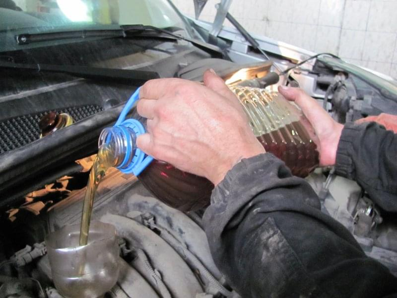
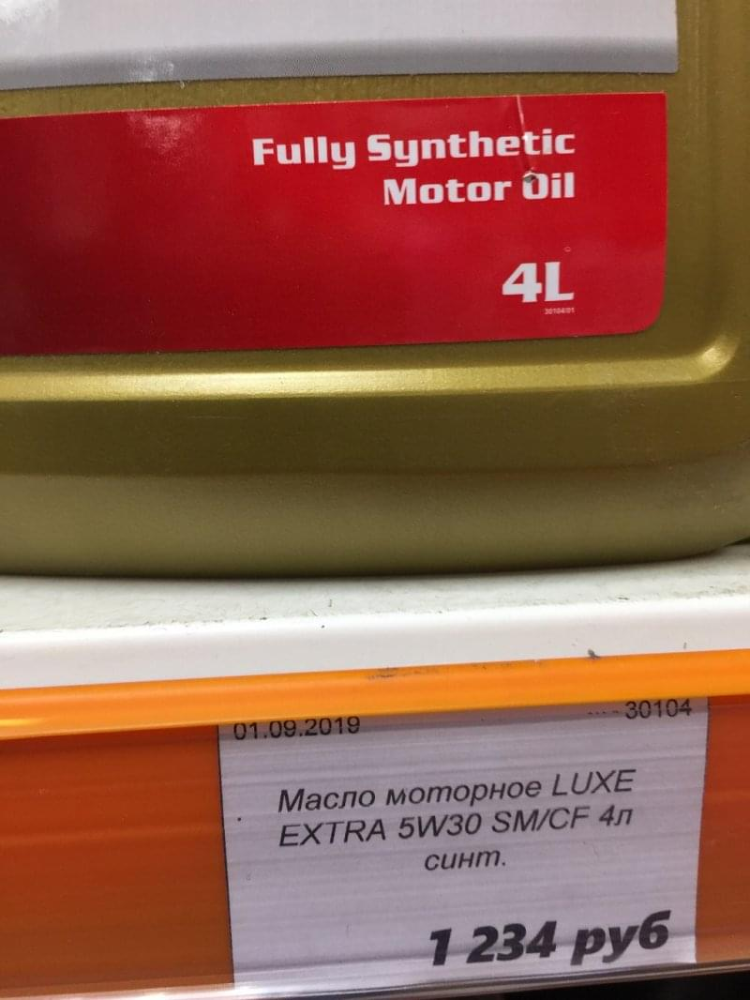

Как правильно выбрать моторное масло: рейтинг ТОП-20 производителей за 2020 год
Обязательным условием беспроблемной эксплуатации автомобиля является наличие в двигателе свежего чистого правильно подобранного моторного масла, которое автовладельцу следует менять на регулярной основе. Во многом от своевременности проведения масляного сервиса и использования качественных технических жидкостей будет зависеть отсутствие критических неисправностей силового агрегата. Учитывая рейтинг моторных масел можно подобрать качественную смазку для мотора, которая будет полностью подходить под эксплуатационные характеристики двигателя.
Содержание:
- Как понять что масло в двигателе требует замены
- Виды моторных масел по типу двигателя автомобиля
- Виды моторных масел по основе состава
- Виды моторных масел по характеристикам вязкости/температуры
- Какие масла в основном используют крупнейшие автопроизводители
- Рейтинг производителей моторных масел
Как понять что масло в двигателе требует замены
В процессе эксплуатации автомобиля в двигателе в масле накапливаются продукты износа и сажа из топлива, что и приводит к потере им своих эксплуатационных характеристик. Обычно в технической документации к автомобилю указывается межсервисный интервал для замены масла. Понять, что масло в двигателе требует замены не составит особого труда, необходимо выполнять его проверку по щупу. Если смазка начала терять свой цвет, у неё появился выраженный горелый запах, то такое масло лучше заменить. На сегодняшний день для большинства современных автомобилей межсервисный интервал замены даже хорошего масла моторного составляет 8-10 тысяч километров пробега.
Как поменять моторное масло
В прошлом большинство автовладельцев выполняли самостоятельную замену масла в двигателе машины, что позволяло им существенно сэкономить на обращении в сервис. Сегодня же своими руками выполнить такую процедуру можно лишь в том случае, если имеется доступ к сливной пробке на картере и масляному фильтру в двигателе. Однако часто для банальной замены масла требуется демонтировать как защиту пластиковую сверху мотора, так и металлическую пластину, защищающую снизу поддон от повреждения. Это существенно усложняет сервисные работы, поэтому большинство автовладельцев при необходимости обслуживания двигателя всё же обращаются в специализированные сервисы, где с использованием лучшего моторного масла, профессионального оборудования и инструментов с лёгкостью выполнят такое обслуживание двигателя.
Нужно ли промывать двигатель при замене масла
Если у мотора отсутствуют какие-либо неисправности, не отмечается масложор, а до этого масло менялось на регулярной основе, то проводить в подобном случае промывку изнутри двигателя, используя для этого специальную автохимию, не требуется. Однако, если автомобиль куплен с рук и неизвестна его история обслуживания, меняется марка масла, отмечается масложор, то в подобном случае мало просто подобрать хорошее моторное масло. Не лишним будет выполнить соответствующую промывку мотора, учитывая при выборе технической жидкости рейтинг моторных синтетических масел.
Виды моторных масел по типу двигателя автомобиля
Современные масло существенно отличается по своим характеристикам, что во многом обеспечивается за счёт наличия тех или иных присадок. Принято отличать масло, которое предназначено для бензиновых или двигателей дизельных моторов, а также смазку для турбированных силовых агрегатов, где на техническую жидкость приходятся максимальные нагрузки. Выбирать смазку необходимо с учетом рейтинга лучших масел моторных, а также конкретного типа двигателя.
Бензиновые моторы
Для бензиновых двигателей используются синтетические и полусинтетические масла, которые отличаются коррозионной стойкостью и благодаря применению различных присадок способны на протяжении длительного времени сохранять свои эксплуатационные характеристики. Такое масло обычно имеет стандартные показатели по вязкости и моющей способности. Если у вас имеются какие-либо сложности с выбором смазки, то специалисты посоветуют вам, какое моторное масло лучше и помогут провести качественный сервис мотора.
Дизельные
Дизельные двигатели более теплонагруженные, из-за особенностей конструкции в масло попадает больше сажи, что может привести к ухудшению эксплуатационных характеристик технической жидкости. Качественное масло для дизельного двигателя будет отличаться устойчивостью к окислению и обладает великолепной моющей способностью.
Турбированные
Выбирая техническую жидкость для турбомотора, необходимо учитывать не только рейтинг синтетических моторных масел, но и рекомендации автопроизводителя. Обычно в такие двигатели заливают масло с показателями вязкости 0W-30 и 0W-40. Смазка должна отличаться устойчивостью, так как такие моторы обычно более температурно нагруженные. Чтобы определить, какое лучше моторное масло для турбированных моторов, необходимо учитывать рекомендации производителя и рейтинги смазки.
Виды моторных масел по основе состава
В зависимости от своей основы все моторные масла можно разделить на две основных категории: минеральное и синтетическое. Последние изготавливаются путем крекинга и переработки различных газов, а минеральная маска по старинке изготавливается из переработанной нефти. Считается, что в современные двигатели можно лить лишь полусинтетику или же синтетическое масло. Если вы раздумываете о том, какое хорошее масло моторное, то в первую очередь необходимо обратить на синтетику от ведущих производителей.
Синтетическое (Fully Synthetic)
Синтетика обозначается надписью Fully Synthetic. Это современная высококачественная техническая жидкость, которая обеспечивает отличную защиту мотора даже при повышенной нагрузке, что характерно для современных турбированных силовых агрегатов. Такое масло длительное время сохраняет свои характеристики, оно очищает ДВС, не густеет при низкой температуре, сохраняет текучесть даже при экстремальной нагрузке.
Полусинтетическое (Semi-Synthetic)
Полусинтетика - это золотая середина между высокотехнологичной синтетикой и доступной по своей стоимости «минералкой». Обычно такое масло выполняется на минеральной основе, но при этом имеет многочисленные присадки, которые позволяют существенно улучшить характеристики такой технической жидкости. Считается, что такое масло отлично подходит для автомобилей, двигатели которых имеют уже существенный пробег.
Минеральное (Mineral)
Минеральное масло получают путем перегонки нефти, по своим эксплуатационным характеристикам такая смазка существенно уступает синтетике, в частности, это касается сохранения эксплуатационных характеристик при низких температурах. Из-за взаимодействия с воздухом внутри двигателя отмечается вскипание масла и образуются шлаки, что приводит к закоксовке мотора. Считается, что такое минеральное масло подходит лишь для двигателей автомобилей, которые выпущены несколько десятков лет назад.
Виды моторных масел по характеристикам вязкости/температуры
Одним из важнейших параметров моторного масла являются его показатели вязкости, которые должны сохраняться при определенных температурах. Этот параметр определяется стандартом SAE, на основании которого и следует выбирать моторное масло. Принято выделять зимнее, летнее и всесезонное масло, определить которое можно по обозначению масла по стандарту SAE.
Например, моторное масло с показателем 0W-50 может использоваться при температурах до минус 35 градусов, а верхняя отметка в 50 позволяет применять такую смазку летом при температурах до 50 градусов. Наибольшее распространение получило хорошее моторное масло, которое имеет показатель густоты 10W-30, что позволяет использовать его зимой при температурах не ниже минус 20 градусов и летом при температурах не выше 30 градусов жары.
Какие масла в основном используют крупнейшие автопроизводители
Большинство автопроизводителей используют немецкие, американские и японские масла от ведущих брендов, такая
смазка отличается высокой технологичностью, надежностью и долговечностью.
Концерн Volkswagen и Audi использует на своих автомобилях различное моторное масло от таких производителей
как Mannol, G-Energy, Motul и Liqui Moly. Такое масло поставляется в оригинальной ваговской таре, будучи
рекомендовано для использования на машинах этого производителя.
Японский производитель Тойота на своих автомобилях использует лучшее моторное синтетическое масло Shell,
Castrol, G-Energy, Idemitsu, NGN, Mobile. Для автомобилей, которые поставляются на внутренний японский и
азиатский рынок, используется исключительно свое собственное японское масло.
Renault использует на своих машинах масло Total, Elf, Motul, Mannol и Zic. Это преимущественно французские
производители моторного масла, продукция которых зарекомендовала себя как достаточно надежная и
высокотехнологичная.
Американский производитель General Motors на своих автомобилях использует масло Liqui Moly, Castrol, Mannol,
на автомобилях, которые производятся и продаются в России, рекомендуют использовать G-Energy, Sintec и
лучшее российское моторное масло Лукойл.
Корейские Kia и Hyundai по заводу используют масло Mannol, Total, Valvoline. В автомобили, которые
эксплуатируются в России, рекомендуют заливать масло ТНК и недорогой Лукойл.
Американский бренд Ford на своих машинах по заводу использует масло Areca, Comma. Также рекомендовано для
использования масло Castrol, Zic, Valvoline, Febi, Total и Лукойл.
Японская Хонда использует на своих автомобилях масло Idemitsu, Total, Motul, Mannol, Zic, Mobile и
Valvoline. Аналогичные марки масла использует также люксовое подразделение этого производителя бренд Acura.
На автомобилях бренда FCA, в который входят автомобили брендов Jeep, Dodge Chrysler, Alfa Romeo, Ferrari и
Maserati используют масло Mobile, Liqui Moly, Castrol, ELF и Eni Agip.
Французский концерт PSA использует на своих автомобилях масло Total. Это преимущественно французские
производители моторных масел, которые разрабатывают свои технические жидкости с учетом характеристик
автомобилей Пежо, Ситроен и Опель.
Японский автопроизводитель Subaru использует в качестве оригинального масла Idemitsu, также допуск для
использования на авто этой марки имеют производители масла Castrol, Motul и другие.
Немецкий Mercedes использует на своих машинах моторное масло, которое выпускается под своим брендом.
Естественно, что Mercedes сам не занимается разработкой масла, закупая его у таких производителей как Shell,
Mobil и Fuchs.
Автопроизводитель BMW на своих автомобилях использует оригинальное масло Motul и Castrol, также допуск для
использования имеют такие масла как Febi, Liqui Moly, Idemitsu и Valvoline.
Рейтинг производителей моторных масел
Учитывая рейтинг лучших моторных масел, а также ознакомившись с рекомендациями вашего автопроизводителя, можно подобрать для машины отличный вариант смазки, которая обеспечит должную защиту двигателя, предупредив критические поломки силового агрегата. Автовладельцу необходимо с максимальной ответственностью подходить к вопросам выбора моторного масла, так как во многом от этого будет зависеть беспроблемность эксплуатации автомобиля и отсутствие критических поломок двигателя.
1. LIQUI MOLY
Ликви Моли - это один из крупнейших немецких производителей моторных масел, продукция которого зарекомендовала себя с наилучшей стороны. В предложении бренда LIQUI MOLY можно найти синтетику, полусинтетику или минеральное масло, предназначенное как для новых суперсовременных автомобилей и двигателей, работающих под максимальной нагрузкой, так и техническую жидкость для автомобилей, выпущенных несколько десятков лет назад. Ликви Моли поставляет свое масло на конвейер Volkswagen, Subaru,Mitsubishi и других автопроизводителей.
2. IDEMITSU
IDEMITSU - это один из старейших японских брендов, который специализируется на выпуске масел и автохимии. Такие масла неизменно получает высокую оценку по своим эксплуатационным характеристикам, в предложении бренда Идемитсу можно найти различные варианты масла для бензиновых, дизельных и турбированных автомобилей. Это высокотехнологичная продукция, которая сохраняет все свои эксплуатационные характеристики и свойства в широком диапазоне температур. Этот производитель масла является одним из основных поставщиков на конвейеры японских автомобильных брендов.
3. Mannol
В рейтинге лучшего моторного масла высокие позиции неизменно занимает немецкий производитель компании Mannol. Эта компания на протяжении многих десятков лет специализируется на изготовлении моторного масла. Благодаря большому практическому опыту работы, использованию суперсовременных технологий и собственных разработок немецкие специалисты изготавливают высокотехнологичное моторное масло, которое имеет увеличенный межсервисный интервал и длительное время сохраняет все свои эксплуатационные характеристики. Масло Маннол рекомендовано не только для использования на немецких и французских автомобилях, но и заливается в моторы отечественного ВАЗа.
4. ZIC
Известный бренд ZIC, который специализируется на производстве моторного масла, принадлежит южнокорейскому гиганту SK Energy. В предложении Зик можно найти несколько линеек масла, которое предназначается для турбированных и атмосферных моторов, а также силовых агрегатов, работающих на дизельном и бензиновом топливе. Это качественное и одновременно недорогое моторное масло, которое пользуется заслуженной любовью у автовладельцев в различных странах мира. Можно подобрать как летнее, так и зимнее масло, а также всесезонные марки, которые отличаются универсальностью использования.
5. MOTUL
Рейтинг моторного масла часто возглавляет продукция французского производителя MOTUL. Это масло используется по заводу на Volkswagen, Audi, Toyota, Subaru и BMW. При производстве смазки Мотул используют последние разработки и суперсовременное оборудование, налажен строгий контроль качества, что позволяет практически полностью исключить брак. Синтетическое масло MOTUL может использоваться в высоконагруженных форсированных двигателях, обеспечивая при этом сохранение всех своих характеристик и увеличение межсервисного интервала обслуживание двигателя.
6. Mobil
Mobile - это финский бренд, производственные мощности которого находятся в Европе, в Северной Америке и в других странах. Это масло традиционно пользуется заслуженной популярностью и любовью у автовладельцев, такая смазка надежна, высокотехнологична и долговечна. В предложении Мобил можно найти различные марки масел, подходящие как для новых автомобилей, так и для машин, выпущенных несколько десятков лет назад. Масло Mobile поставляется на производственные линии крупнейших автопроизводителей, в том числе Volkswagen, Mitsubishi, Toyota, Chevrolet и ВАЗ.
7. Лукойл
Лукойл - это российский производитель масла, который предлагает свою продукцию в бюджетном сегменте. Такое масло имеет доступную стоимость, обладает отличными смазывающие свойствами, предупреждает закоксовку двигателя и исключает коррозию металла. Производство технической жидкости осуществляется на суперсовременном оборудовании, это позволяет гарантировать отличные эксплуатационные характеристики таких масел, которые по отдельным параметрам не уступают даже лучшим маркам смазки.
8. Shell
Нидерландский производитель моторного масла Shell выпускает качественную продукцию, которая сегодня используется в качестве оригинального масла на различных европейских и японских брендах. Лучшее моторное масло W40 от Шел обеспечивает необходимую защиту двигателя, предупреждает коррозию металла, такая техническая жидкость обладает великолепными моющими свойствами, позволяя предупредить закоксовку мотора, существенно продлевает его срок службы. В предложении этого бренда можно найти моторное масло на дизели и бензиновые моторы, для использования в жарком или холодном климате.
9. Castrol
Продукция немецкого бренда Castrol неизменно входит в топ лучших моторных масел. Это высококачественная техническая жидкость, в предложении производителя Кастрол можно найти синтетику, полусинтетику и недорогое минеральное масло. По заводу такая смазка используется на крупнейших европейских авто брендах. Масло Castrol сочетает высокотехнологичность, оно долговечно, обеспечивает необходимую защиту двигателя, предупреждая критические неисправности силового агрегата.
10. Татнефть
Татнефть - это дешевое моторное масло, которое, несмотря на российское название, имеет немецкую регистрацию. Этот производитель изготавливает высококачественные моторные масла, которые рекомендованы для использования на автомобилях Mitsubishi, Subaru и ряде других марок. В предложении Татнефть можно подыскать различные разновидности моторного масла, как всесезонные, так и зимние или летние. Технические жидкости изготавливаются с соблюдением строгих стандартов качества, полностью исключается брак, при этом такое масло предлагается покупателям по доступным ценам.
11. Texaco
Texaco - это крупнейший американский производитель моторного масла, продукция которого поставляется на конвейеры многих автопроизводителей в США. Большинство автовладельцев неизменно оставляют положительные отзывы об использовании моторного масла Тексако, они отмечают его качество, отличную работу двигателя на такой смазке, возможность использования таких масел при экстремально низких и высоких температурах. Масло Texaco предлагается по доступным ценам, что неизменно сказывается на его популярности у автовладельцев.
12. RAVENOL
Ravenol - это немецкий бренд, который специализируется на производстве высококачественного масла для бензиновых и дизельных моторов. В линейке предложения этого производителя можно найти моторное масло с отличными эксплуатационными характеристиками, это всесезонная универсальная техническая жидкость, которая может с одинаковым успехом использоваться как в холодном климате, так и при высоких температурах. Если вы подыскиваете самое лучшее моторное масло для турбированных двигателей, рекомендуем приглядеться к синтетике Равенол, которая обладает отличными эксплуатационными характеристиками, обеспечивает должную защиту двигателя и предупреждая его износ.
13. SINTEC
Российский производитель компанияSINTEC предлагает высококачественное и недорогое моторное масло, предназначенное для современных дизельных и бензиновых моторов. Такое моторное масло выпускается по суперсовременной технологии на высококачественном оборудовании, это позволяет гарантировать отличные эксплуатационные характеристики смазки Синтек и минимальное количество брака. Моторное масло SINTEC имеет допуск для использования на различных марках автомобилей, в том числе на Opel, Honda и Chevrolet.
14. Xenum
Бельгийское моторное масло Ксенум относительно недавно появилось на российском рынке, но уже успело завоевать популярность и заслуженное уважение у автовладельцев. Такое моторное масло одновременно предлагается по доступной стоимости, оно отличается качеством изготовления, можно подобрать смазку Xenum с различными характеристиками, которые сохраняются в широком диапазоне температур, одновременно обеспечивается увеличение межсервисного интервала при замене масла. Неудивительно, что Xenum сегодня часто включают в список лучшего синтетического моторного масла для иномарок.
15. VALVOLINE
VALVOLINE - это американский производитель моторного масла, который на протяжении многих лет предлагает качественную и недорогую высокотехнологичную продукцию. Масло Вальволин поставляется на конвейеры различных американских производителей, также такое масло рекомендовано для автомобилей Toyota,Lexus, Subaru, Kia, Chevrolet и BMW. Доступная стоимость такой технической жидкости сочетается с её высокой технологичностью и универсальностью использования.
16. ELF
ELF - это французское моторное масло, которое производится уже на протяжении многих десятков лет, такая продукция зарекомендовала себя как высококачественная, беспроблемная и универсальная в использовании. Можно с легкостью подыскать моторное масло Эльф, которое предназначается для автомобилей, выпущенных в начале девяностых годов, так и суперсовременную высококачественную синтетику, которая считается лучшим моторным синтетическим маслом для французских автомобилей. Часто специалисты, рассказывая о том, какое хорошее моторное масло, именно отмечают продукцию ELF.
17. Total
Тотал - это еще один известный французский производитель моторного масла, который также специализируется на добыче нефти. Эта компания ведет свою историю с 1924 года, она на протяжении 100 лет изготавливает высококачественные моторные масла, которые с успехом используются по всему миру. Большой популярностью пользуется линейка масла Total Quartz, которая представляет собой универсальную смазку премиум-класса, идеально подходящую для современных высоконагруженных форсированных двигателей. Масло Total Quartz Ineo рекомендовано для использования на автомобилях Mercedes, BMW и Porsche.
18. Kixx
Ких - это малоизвестный на российском рынке южнокорейский бренд, который считается одним из крупнейших в Азии. Продукция этой компании используется на различных южнокорейских и японских автомобилях, такое моторное масло выпускается на полусинтетической и синтетической основе, оно сохраняет свои характеристики в широком диапазоне температур, обеспечивая качественное смазывание двигателя и предупреждает его преждевременный износ. Можно подобрать масло Kixx, которое будет отличаться своими параметрами вязкости, предназначается как для современных автомобилей, так и для иномарок, выпущенных несколько десятков лет назад.
19. BP
Бельгийский концерн BP предлагает несколько десятков различных вариантов моторного масла, которое предназначено для атмосферных и дизельных силовых агрегатов, а также моторов работающих на бензине и солярки. Это качественное и высокотехнологичное моторное масло, которое выполнено с использованием различных присадок, существенно улучшающих эксплуатационные характеристики такого масла. Масло БП поставляется на конвейеры японских производителей Тойота и Ниссан, оно рекомендовано для использования на различных европейских и американских брендах автомобилей.
20. ESSO
Американское масло ESSO поставляется на конвейеры североамериканских производителей автомобилей. Такая смазка благодаря своей высокой технологичности, качеству исполнения и доступной стоимости неизменно пользуется популярностью у автовладельцев. Большинство водителей оставляют положительные отзывы об использовании такого масла, отмечая тихую и ровную работу, отсутствие загустения смазки при отрицательных температурах, а также минимальное потребление масла Эссо, что позволяет решить проблемы с масложором и закоксовкой двигателя.